Applications of Machine Learning
BSc Mathematics of Artificial Intelligence · Third year
Score the first commitment
Count MAE, 128 images
Value
One box per image
6.02
Predict the corpus mean for every image
4.88
Faster R-CNN at score $\geq 0.5$
3.00
What you wrote down
—
Read yours out. The question is not whether you were close;
it is whether your number was anchored to 6.02 rather than to a feeling.
And the second one
You were asked for a formula that says how right a box is.
It should be 1 for identical boxes and 0 for boxes that do not touch
It should punish a box for being too large and for being too small
It should have no units
Three of you will read yours out. At least one will have
written the right thing without knowing its name. At least one will have
written something that breaks for disjoint boxes — and that one is the
more useful contribution today.
Today
Thread 9 Intersection over union,
its missing gradient, average precision and mAP
(20 min)
Diagnose — why counting was the wrong metric
(20 min)
Re-measure, then extend: suppression, tracking, per-pixel prediction
(35 min)
Red-team (15 min)
Block 1 is dense. It is four ideas that depend on each
other in order, and the deck says at the end which three things were cut.
Mathematical thread 9
Intersection over union, and the mean of a mean
20 minutes
One quantity, four requirements
From the end of the last lecture. Whatever we write must:
be 1 for coincident boxes and 0 for disjoint ones
punish a box for being too large
punish a box for being too small
be dimensionless, so a cup and a sofa are on one scale
The construction
Requirement 2 says the predicted area must be in the denominator.
Requirement 3 says the true area must be too. Requirement 4 says
the numerator must be an area as well. There is essentially one candidate.
Intersection over union
$$\mathrm{IoU}(A,B) \;=\; \frac{|A \cap B|}{|A \cup B|}
\;=\; \frac{|A \cap B|}{|A| + |B| - |A \cap B|}$$
also called the Jaccard index
The second form is the one you compute: the union is never built
Subtracting the intersection is not an optimisation — add the two
areas and you have counted the overlap twice
Range $[0,1]$, and it is exactly 1 only when $A = B$
The two areas
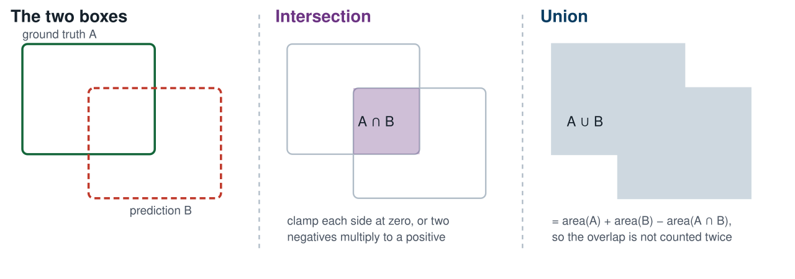
The intersection of two axis-aligned boxes is another
axis-aligned box, which is what makes this cheap.
Without the clamp, two disjoint boxes give a negative width
and a negative height, whose product is a positive
intersection. We come back to that in twenty minutes with a measurement.
Four pairs, four values
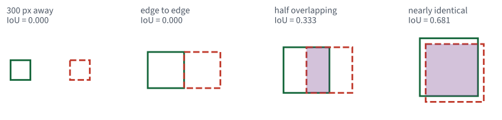
The first two panels are very different pictures and
the same number. Hold on to that.
It meets all four requirements
Requirement
Why IoU satisfies it
1 when coincident
numerator equals denominator
punishes too large
$|B|$ grows, so the denominator grows
punishes too small
the numerator shrinks with $|A \cap B|$
dimensionless
area over area
And the whole-image baseline scores 0.086
on our corpus, which is the number that was left unexplained last time.
IoU does three different jobs
Matching. Decide whether a detection counts as the
same object as an annotation — today, at a threshold
Suppression. Decide whether two detections are
duplicates of each other — later this lecture
Training. Serve as the loss a regression head descends
— and this is the one that breaks
The first two use IoU as a comparison. Only the third
needs it to have a derivative, and that is where thread 9 has its teeth.
IoU as a loss
$$\mathcal{L}_{\mathrm{IoU}} \;=\; 1 - \mathrm{IoU}(A, B)$$
$B$ is predicted; $A$ is fixed
Attractive, because it optimises the thing that is reported. The
alternative — a squared error on the four coordinates — optimises
something else and hopes.
So: take the derivative with respect to the predicted box and
descend.
The experiment
Two boxes, each $100 \times 100$. Fix the first at the origin. Slide the
second to the right by $d$ pixels and record the value and the gradient.
$$A = [\,0,\; 0,\; 100,\; 100\,], \qquad
B(d) = [\,d,\; 0,\; d{+}100,\; 100\,]$$
synthetic boxes — no data, no model, no noise
Synthetic on purpose. Nothing here depends on a dataset, and
the conclusion is a property of the formula rather than of COCO.
Past 100 pixels there is nothing to descend
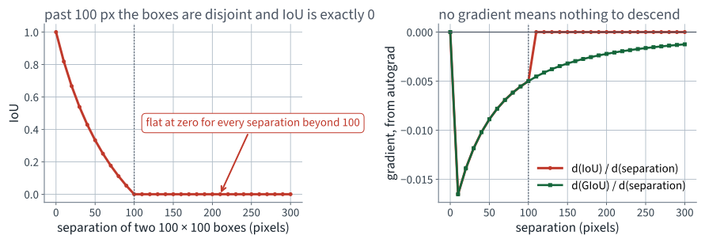
Twenty separations past 100 px, every one of them
IoU $= 0$ and gradient exactly $0$.
The same thing as numbers, from autograd
$d$
IoU
$\partial\,$IoU$/\partial d$
GIoU
$\partial\,$GIoU$/\partial d$
0
1.000
0.000
1.000
0.000
50
0.333
−0.0089
0.333
−0.0089
90
0.053
−0.0055
0.053
−0.0055
150
0.000
0.000
−0.200
−0.0032
300
0.000
0.000
−0.500
−0.0013
Rows four and five are the point. Two boxes 150 px apart and
two boxes 300 px apart are, to IoU, exactly equally wrong.
Why the gradient is exactly zero, not merely small
For $d \geq 100$ the overlap width is $\max(0,\,100-d) = 0$, so
The clamp makes the function constant on the whole disjoint
region, not just small there
A constant has no descent direction. Not a weak one — none
This is a property of the formula. No optimiser, learning rate or
initialisation repairs it
What that costs you in practice
The failure mode
A proposal that starts anywhere outside the object it should find receives
the same loss and the same zero gradient wherever it is. It cannot be moved
towards the object, because nothing in the loss knows which way the object
lies.
This is why detectors are not trained on IoU alone. It is
also why the coordinate regression they are trained on needs anchors
close enough to overlap in the first place.
The repair: put the empty space back in
Let $C$ be the smallest axis-aligned box containing both $A$ and $B$.
same shape, $100 \times 100$ against $100 \times 100$
0.000
−0.247
different shape, $100 \times 100$ against $200 \times 50$
0.118
−0.275
$v$ is exactly zero whenever the shapes agree, which is why
it is invisible in the figure on the next slide — every pair there is
square.
Both repairs keep moving where IoU has stopped
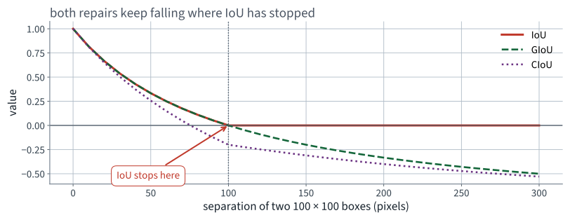
Past 100 px, IoU is a horizontal line and the other two
are still descending.
An honest caveat about all three
We are not training anything today
GIoU and CIoU are losses. Their value is in the backward pass of a
detector you are fitting. Nothing in this application fits a detector, so
the demonstration above is a property of the functions rather than a
measured improvement in a model we built.
Saying that is the difference between a lecture and an
advertisement. What we can measure today is the evaluation, and that
is the rest of the hour.
From one box to a whole detector
IoU scores one pair. A detector emits 1,206 boxes over 128
images, most of them wrong, all of them carrying a score.
Fixing a score threshold gives one precision and one recall — and
throws away everything the ranking knew
Lecture 4 already solved this shape of problem
A detector is a ranking. Score it as one.
Turning detections into true and false positives
Fix a class and an IoU threshold $t$
Sort every detection of that class, over the whole corpus, by score,
highest first
Walk down the list. For each detection, find the best
unmatched annotation in the same image
If that IoU is at least $t$: a true positive, and the annotation is now
matched. Otherwise: a false positive
Step 3's word unmatched is what makes a second box
on the same bottle a false positive rather than a second success.
Precision and recall, unchanged from Lecture 4
$$\begin{aligned}
\text{precision} &= \frac{\mathrm{TP}}{\mathrm{TP}+\mathrm{FP}} \\[6pt]
\text{recall} &= \frac{\mathrm{TP}}{\text{annotations of this class}}
\end{aligned}$$
Both are computed cumulatively, after each detection in the
ranking — so a corpus of 1,209 person detections gives 1,209
points
The recall denominator is fixed, so recall is non-decreasing as you go
down the list
Precision has both a numerator and a denominator moving
Precision is not monotone here either
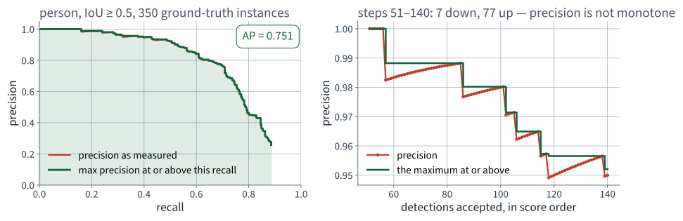
The right-hand panel is Lecture 4's counterexample on
boxes instead of digits: 7 steps down and 77 up, in 90 steps.
Every step accounted for, exactly
Walking the person ranking, one detection at a time
Steps
the detection is a false positive — precision falls
899
it is a true positive and precision was below 1 — precision rises
254
it is a true positive and precision was already 1 — no change
55
899 is exactly the number of false positives
$254 + 55 = 309$, which is the 310 true positives less the one at the
very top of the ranking, which has no step above it
The 55 flat steps are one contiguous run: the top 56 person detections
in the whole corpus are all correct
This is not a tendency. It is an exact classification of
all 1,208 steps, in the same form as Lecture 4.
The repair Lecture 4 promised you
From Lecture 4, thread 2: “Average precision is defined using the
maximum precision at or above each recall level. That maximum is
there for exactly one reason: to replace a non-monotone quantity by a
monotone one. Thread 9, in Lecture 18, builds mAP on top of it.”
$$p_{\text{env}}(r) \;=\; \max_{\tilde r \,\geq\, r} p(\tilde r)$$
the envelope — non-increasing by construction
Why a maximum, and not a smoothing
It has an operational reading: if you are willing to accept recall
$r$, here is the best precision available to you at that recall or
better
It is monotone by construction, so the area under it is well defined
and does not depend on where you sampled
It is one line of code and has no parameters — nothing to tune,
nothing to report
env = precision.copy()
for i in range(len(env) - 2, -1, -1):
env[i] = max(env[i], env[i + 1]) # sweep right to left
Average precision
$$\mathrm{AP} \;=\; \int_0^1 p_{\text{env}}(r)\,\mathrm{d}r
\;=\; \sum_k \bigl(r_k - r_{k-1}\bigr)\, p_{\text{env}}(r_k)$$
area under the enveloped curve
The sum only has terms where recall actually changed, which is exactly
at the true positives
No threshold appears anywhere. That is the whole point:
the number does not depend on a cut-off nobody chose
Two definitions, and which one COCO uses
Variant
How
person, IoU 0.5
all-point
exact area under the envelope
0.751
101-point
envelope sampled at $r = 0, 0.01, \ldots, 1$
0.748
COCO reports the second. Older PASCAL VOC papers used an 11-point
version, which is the same idea sampled more coarsely
They differ by 0.003 here. Quoting one and comparing against a paper
that used the other is a real, small, avoidable error
Non-examinable: which benchmark uses which sampling.
Examinable: that the envelope and the area are the definition.
Average precision for one class, on 128 images
person, IoU $\geq 0.5$
Value
Annotated instances
350
Detections in the ranking
1,209
True positives
310
Highest recall reached
0.886
AP
0.751
Recall stops at 0.886 because 40 annotated people are never
detected at all, at any score. No threshold can recover them, and AP is
honest about that.
The first mean: over classes
$$\mathrm{mAP}(t) \;=\; \frac{1}{|\mathcal{C}|}\sum_{c \in \mathcal{C}}
\mathrm{AP}_c(t)$$
$\mathcal{C}$ = the classes present in the corpus
Unweighted. A class with one annotation counts as much as
person with 350
We average over the 73 classes that appear in our 128 images. The other
7 of COCO's 80 have no annotations here and no AP to average
That choice — which classes are in the mean
— is a decision, it changes the number, and papers do not always say
which one they made.
What the first mean hides
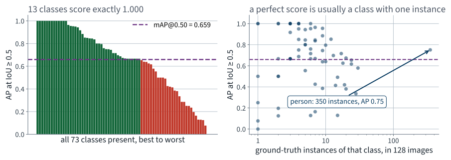
Thirteen classes score exactly 1.000, and they are the
ones with one or two instances in the whole corpus.
The spread behind 0.659
Across the 73 classes
AP at IoU $\geq 0.5$
Best (bus, and twelve others tied)
1.000
Median
0.673
Mean — this is the mAP
0.659
Classes below the mean
29
Worst (hot dog)
0.000
A class with a single annotation scores 1.000 or 0.000 and
nothing in between. Thirteen ones and one zero are not measurements of the
detector; they are measurements of our corpus.
At $t = 0.50$ a box that half-covers the object counts as correct
At $t = 0.95$ it must be very nearly exact
Averaging the ten is COCO's headline number, and it is what
“mAP” means unqualified in a modern paper
What the second mean hides
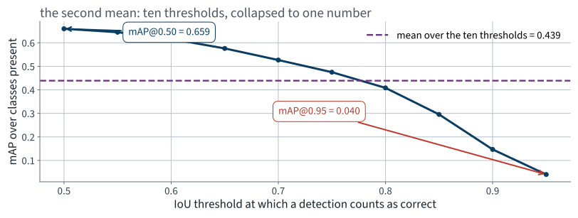
0.659 at the loosest threshold and 0.040 at the tightest.
One number in the middle stands for both.
A mean of a mean of an area
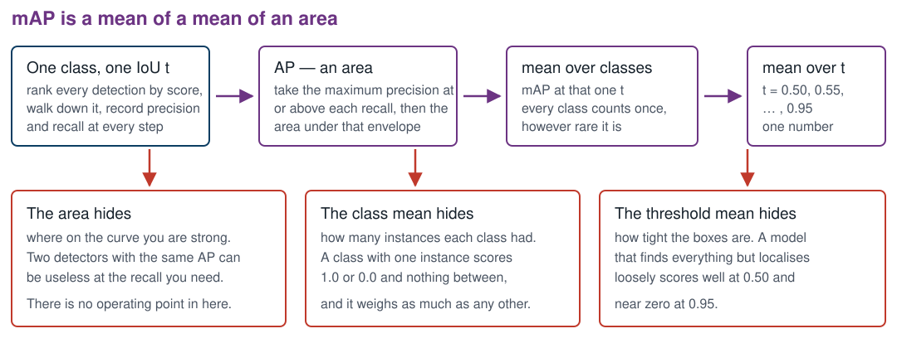
Three collapses, one number. Each collapse throws away a
different thing, and none of them is recoverable from the result.
Our detector, on 128 images
Metric
Value
mAP at IoU 0.50
0.659
mAP at IoU 0.75
0.475
mAP averaged over 0.50 to 0.95
0.439
Every one of these is a measurement on 128
images and 73 classes, and is quoted with that attached.
Thread 9 · Summary
IoU is intersection over union: dimensionless, 1 for identical boxes,
and it punishes a box for being too large or too small
It is constant at zero for every disjoint pair, so its
gradient there is exactly zero and there is nothing to descend
GIoU adds the empty part of the enclosing box; CIoU adds centre
distance and aspect ratio. Both keep a gradient where IoU has none
Average precision is the area under the maximum precision at
or above each recall — the maximum exists to repair the
non-monotonicity proved in Lecture 4
mAP averages AP over classes and then over ten IoU thresholds. It is a
mean of a mean of an area, and each level hides something different
Part two
Why 3.00 was the wrong number
20 minutes
Fault one · The metric is blind to location
System A
System B
Boxes
9
9
Boxes on the right objects
9
0
Count MAE
0.00
0.00
AP at IoU $\geq 0.5$
1.000
0.000
The last row is the repair. It is the row that could not
be written last time.
Fault two · The number depended on a cut-off
Count MAE was 3.00 at threshold 0.5, 27.51 at 0.05, and 1.92 at
0.75
A metric with a knob is a metric with an argument attached, and the
argument is usually settled by whoever reports it
AP consumes the entire ranking, so there is no knob to settle
The general rule
When a system produces a score, evaluate the ranking, not one thresholding
of it. You met this in Lecture 4 with ROC and PR curves; the detection case
is the same argument with a matching rule in front of it.
Fault three · 1.92 was a tuned number
The minimum of the error curve sat at threshold 0.75
That minimum was found on the 128 images we then report on
Reporting it would be choosing a hyperparameter on the evaluation set
— Lecture 2's error, and Lecture 6's, in a third costume
We flagged this at the time and quoted 0.5 anyway. That was
the right call, and it is worth noticing that the discipline cost us a
number that looked better.
The worked assistant failure
“Write me a function that computes IoU”
four beats
Beat 1 · The prompt
What was asked
“Write a NumPy function that takes two bounding boxes in
[x1, y1, x2, y2] format and returns their intersection over
union.”
Format specified, library specified, return value specified.
It is a better prompt than most. One thing is missing and it is not
obvious.
The last line reports two boxes 200 pixels apart in both
directions as a perfect match. Two negative differences
multiply to a positive intersection.
Measure the damage
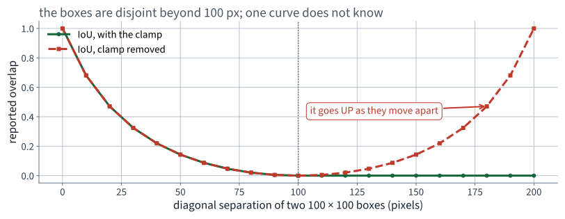
The defective function is symmetric about 100 px: it
reports more overlap the further apart the boxes get.
Why nothing ever raised
It is arithmetic on floats. There is no invalid operation anywhere
It returns a number in a plausible range for the cases you test
Used for matching, it silently accepts detections that are
nowhere near the object — and mAP goes up
An evaluation bug that improves your score is the hardest kind to find,
because nobody goes looking
This is the same species as the metric averaged per
batch in Lecture 12: no exception, a plausible number, and a bias in the
flattering direction.
Beat 4 · The corrected specification
What should have been asked
“… returns their intersection over union. Clamp the
overlap width and height at zero. Include tests for: identical
boxes returning 1, boxes sharing an edge returning 0, boxes
separated along one axis, and boxes separated along both
axes. Assert that the result is always in $[0,1]$.”
The last assertion is the one that would have failed
immediately, on the very first disjoint pair, without anyone having to think
of the diagonal case.
Beat 4 · The test that makes it safe
import itertools
def iou_checked(a, b):
v = iou(a, b) # the clamped one, from slide 9
assert 0.0 <= v <= 1.0, f"IoU out of range: {v}"
return v
box = np.array([0., 0., 100., 100.])
for dx, dy in itertools.product([0, 100, 150, 200], repeat=2):
other = box + np.array([dx, dy, dx, dy])
v = iou_checked(box, other)
assert (v == 0.0) == (dx >= 100 or dy >= 100), (dx, dy, v)
Sixteen pairs, one loop, and the property is stated rather
than the values: zero if and only if the boxes are disjoint on some
axis.
Part three
Re-measure, then suppress, track and segment
35 minutes
Before quoting our own number, check it against someone else's
We derived AP on these slides and implemented it ourselves. That is
exactly the situation in which a result should not be believed.
mAP on our 128 images
Ours
Reference evaluator
at IoU 0.50
0.659
0.660
at IoU 0.75
0.475
0.476
averaged 0.50 to 0.95
0.439
0.440
Largest disagreement: 0.0014. The reference is the
official COCO evaluator, run on the same predictions and the same
annotations, by a library we did not write.
Non-examinable: the reference library. Examinable:
that you check an implementation against one.
Now compare 128 images against 5,000
mAP, averaged 0.50 to 0.95
Value
Images
Ours
43.9
128
Reported by torchvision for these weights
37.0
5,000
Our number is 6.9 points higher, and the model is
identical.
Nothing about the detector changed. The difference is the
sample: 128 images, of which many are easy, and 73 classes several of which
have a single instance that happened to be found. This is what a small
evaluation set does, and it does it in the flattering direction more often
than not.
How to tell a sampling difference from a real one
The direction is not guaranteed — a different 128 images would
give a different answer, in either direction
You cannot compute a confidence interval for mAP by staring at it: the
detections are not independent within an image
The practical rule: never compare two mAPs measured on
different sets, and say the set size whenever you quote one
Bootstrapping over images is the usual
remedy, and it is outside Chapter 12. Non-examinable, and worth knowing.
A second failure, this one from the catalogue
An assistant asked to “report mAP over the dataset” will
sometimes compute AP for each image and average those.
mAP at IoU 0.50, 128 images
Value
accumulated over the whole corpus, correctly
0.659
computed per image, then averaged
0.817
0.157 of free mAP. It is the metric averaged per
batch rather than over the set — the same entry in the
silent-failure catalogue you met in Lecture 12, wearing detection clothes.
Why it inflates: a single image usually contains one or two
classes and a handful of objects, so its own AP is often 1.0. Averaging a lot
of easy 1.0s is not the same as ranking every detection against every other.
Extension one
Non-maximum suppression
10 minutes
How many boxes are there really?
231.7
candidate boxes per image, with suppression switched
off
against 23.6 after suppression at IoU 0.5, and 7.02
actual objects
The detector you ran last lecture had already thrown away
nine tenths of its own output before you saw it, using IoU, at a threshold
you did not set.
The rule
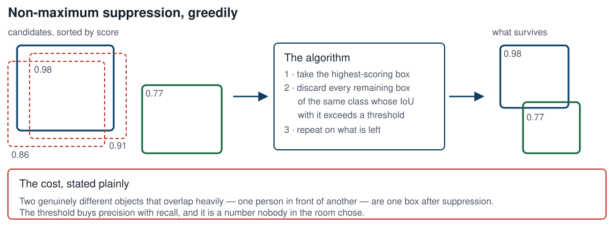
Greedy, per class, and it deletes information that cannot
be recovered afterwards.
batched_nms rather than nms: a
bottle overlapping a glass must not suppress it, because they are different
classes and both are true.
Before and after, on one image
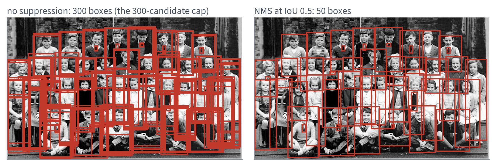
Same model, same image, same score threshold. The only
difference is one IoU comparison between pairs of boxes.
And it is another knob
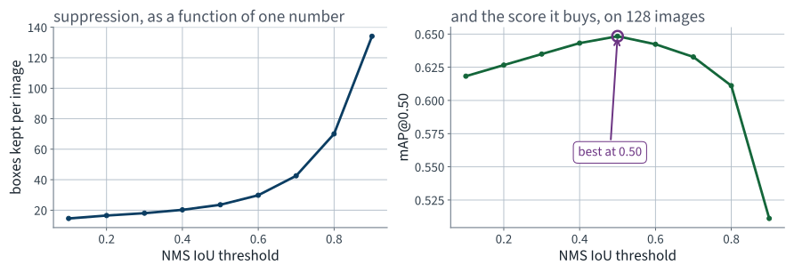
The default of 0.5 happens to be near the best value on
our corpus. That is a fact about this corpus, not a law.
What suppression costs
Too low a threshold and two people standing close together become one
person
Too high and every object keeps its duplicates, which are all false
positives
Crowded scenes are exactly where detection matters and exactly where
this trade-off is worst
Soft-NMS, which decays scores instead of deleting
boxes, and learned alternatives are outside Chapter 12. Non-examinable, and
the direction the field went.
Extension two
Object tracking
5 minutes
Detection on video is not tracking
Run the detector on every frame and you have boxes. You do
not have the same bottle in frame 2 as in frame 1.
Tracking asks for an identity that persists across frames
Which turns each frame into an assignment problem: match this frame's
detections to the existing tracks
And the cheapest similarity between a track's predicted box and a new
detection is — IoU
Thread 9 pays for itself a third time.
A tracker, in four lines of description
Predict where each existing track's box will be in this frame
Compute IoU between every prediction and every new detection
Solve the assignment: pair them up to maximise total IoU
Unmatched detections start new tracks; unmatched tracks age and die
Where it fails, and why it is IoU's fault again
An object that is occluded for ten frames reappears somewhere its predicted
box does not overlap. IoU is zero, the assignment finds nothing, and the
object is issued a new identity. The same flatness, in a new place.
Tracking, scope
In the book: that detection plus association is what
tracking is, and that appearance features are added to IoU to survive
occlusion
Not examinable: Kalman filters, the Hungarian
algorithm, DeepSORT's re-identification network, the MOT benchmark
metrics
We have not run a tracker in this course and we are not
going to. Five minutes on the shape of the problem is what the clock allows,
and this slide says so rather than pretending otherwise.
Extension three
Per-pixel prediction
15 minutes
A box was always an approximation
A bicycle's box is mostly not bicycle
A person sitting cross-legged fills perhaps half of theirs
For a picking arm, “somewhere in this rectangle” may not be
good enough
Ask instead for a label on every pixel.
Four questions, four output shapes
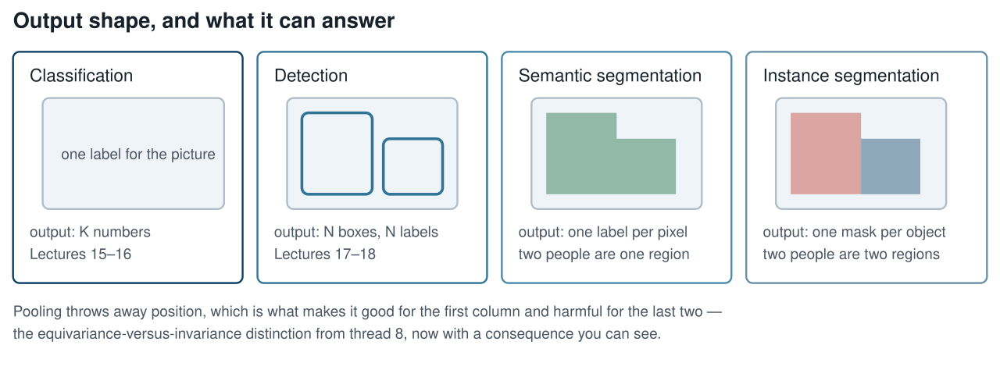
Semantic and instance segmentation differ in exactly one
place: whether two touching objects of the same class are one region or two.
Semantic segmentation
Output: one class label per pixel. Shape $H \times W$, not $N \times 4$
Two people standing together are one person region. You
cannot count them
The architectural problem is that pooling destroyed the resolution the
answer needs — which is thread 8's invariance, arriving as a
cost
The repair is upsampling with skip connections: transposed convolutions
that recover spatial detail from the earlier, higher-resolution layers
Instance segmentation
Output: one binary mask per detected object, plus its class and score
Mask R-CNN is Faster R-CNN with one extra head that predicts a small
mask inside each proposed box
Two lines of code away from what you already ran
from torchvision.models.detection import (
maskrcnn_resnet50_fpn, MaskRCNN_ResNet50_FPN_Weights)
model = maskrcnn_resnet50_fpn(
weights=MaskRCNN_ResNet50_FPN_Weights.COCO_V1).eval().to(DEVICE)
out = model([preprocess(img).to(DEVICE)])[0]
print(out["masks"].shape) # (N, 1, H, W), soft masks in [0, 1]
The same image, both ways
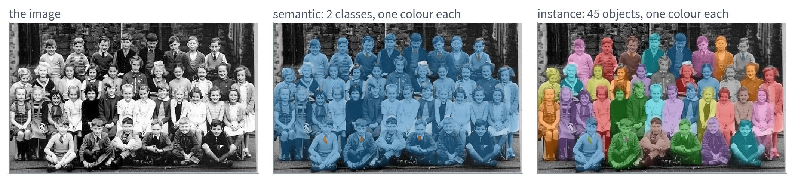
Middle: two classes, two colours. Right: 45 objects, 45
colours. Only the right-hand picture can answer “how many?”
And the annotation for that image says 22
The class photograph
Count
People Mask R-CNN finds at score $\geq 0.7$
45
People COCO annotates individually
13
Crowd regions covering the rest
1
Ties annotated
9
The detector is probably right and the ground truth is
probably not wrong. They answer different questions.
Whoever annotated this image decided that thirteen children
were worth drawing and the rest were a crowd. Every metric in this lecture is
measured against that decision.
Scoring a mask is the same argument again
Mask AP replaces box IoU with mask IoU: intersecting
pixel sets instead of rectangles
Everything above — the ranking, the envelope, the area, the two
means — is unchanged
torchvision reports 34.6 mask mAP for these weights on the full 5,000,
against 37.9 box mAP
A mask is harder than a box, which is what those two numbers
say. We do not measure mask AP on our corpus; the pixel-level annotations are
in the file and the code is an exercise.
Part four
Swap notebooks
15 minutes
The five questions, in this order, every time
What touched the test set?
What was fitted, and on what? (fit and
transform are different verbs)
What is the shape here?
What was dropped — rows, columns, NaNs? Count them
What is the default I did not ask for?
Report what you found, not what you
would have done differently.
What they mean in a detection notebook
Question
Where it bites today
1
was any threshold chosen by looking at the 128 images?
2
nothing is fitted — so is the corpus doing any work it should not?
3
masks is $(N,1,H,W)$; indexing it as $(N,H,W)$ silently gives you the first object
4
the 8 crowd regions, and every detection below the score cut-off
5
score 0.05, NMS 0.5, 100 detections per image, IoU 0.5 for matching
Three bugs to hunt for by name
The missing clamp. Feed the partner's IoU function two
boxes separated diagonally. If it returns anything above zero, you have
found it in eight seconds
Per-image AP. Look for a loop over images with an
np.mean at the end. Worth 0.157 on this corpus
Corner against size. Assert
x2 >= x1 on every box in the notebook, wherever it came
from
All three run. All three produce a plausible number. Two of
the three make the score look better.
What this lecture left out, and where it sits
How detectors are actually trained — anchors,
the region proposal network, the assignment of anchors to targets. In
the book at a level we did not have time for
Single-shot detectors — the YOLO and SSD family,
where the whole grid is predicted in one pass. Named in Chapter 12
Panoptic segmentation, soft-NMS, and modern
transformer detectors that have no NMS at all. Outside the book
Three things, said out loud, rather than left as an
impression that the field ends here.
Where we ended up
Application 9, 128 images of COCO val2017
Value
Count MAE, the metric we committed to
3.00
mAP at IoU 0.50
0.659
mAP averaged 0.50 to 0.95
0.439
The same weights on 5,000 images
0.370
The first row is not wrong; it is blind. The last row is the
one that keeps the other two honest.
Summary
IoU has no gradient for disjoint boxes — not a small one,
none — and GIoU and CIoU repair that by adding terms that
keep moving
Average precision scores a ranking, needs no threshold, and uses the
maximum precision at or above each recall precisely to repair Lecture
4's non-monotonicity
mAP is a mean of a mean of an area; each level hides the operating
point, the class imbalance, and the tightness of the boxes
Our implementation agrees with the reference evaluator to 0.0014, and
our 128-image estimate is 6.9 points above the same model's score on
5,000
Suppression, tracking and instance segmentation all rest on the same
overlap measure
A predicted box and a ground-truth box are both $100 \times 100$ pixels and
do not overlap.
1. State the IoU, and its derivative with respect to the
horizontal position of the predicted box. 2. Explain in one sentence why this makes IoU unusable as a
training loss on its own. 3. Name one modification that repairs it and state which
quantity it adds.
Four marks. Worked answer on the next slide.
Specimen answer — Part A
1. IoU $= 0$; the derivative is $0$. The intersection
is clamped at zero over the whole disjoint region, so IoU is
constant there
2. A constant loss provides no descent direction, so
gradient descent cannot move the predicted box towards the target from
any starting point that does not already overlap it
3. GIoU, which subtracts the fraction of the smallest
enclosing box occupied by neither box; or CIoU, which additionally
subtracts a normalised centre distance and an aspect-ratio term
The common wrong answer to part 1 is “the
gradient is very small”. It is not small. It is zero, and the
distinction is the entire question.
Specimen exam question — Part B
A detector is evaluated on a corpus in which 30 of the classes present have
exactly one annotated instance each. Its reported mAP at IoU 0.5 is
0.72.
1. State two distinct reasons why this number may be
optimistic. 2. State one thing you would report alongside it.
Three marks.
Specimen answer — Part B
1a. A class with one instance has AP either 1 or 0, so
30 near-coin-flips are averaged in with the same weight as a class with
hundreds of instances
1b. IoU 0.5 is the loosest of the ten COCO thresholds;
a detector that localises badly still scores well there, and the
0.50-to-0.95 average would be much lower
2. Any one of: the number of images, the per-class AP
distribution, the instance count per class, or the same metric averaged
over the ten IoU thresholds
Full marks for “the sample size” alone in part 2.
It is the single most informative thing missing from most reported
scores.